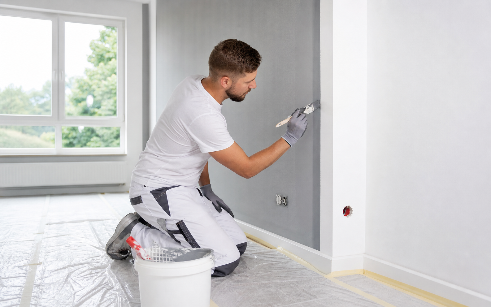
Innenanstriche
Frische, strapazierfähige Anstriche für Wohnräume, Treppenhäuser, Büros und Praxisflächen.
Malerbetrieb in Karlsruhe
Seit über 25 Jahren vertrauen Privatkunden, Eigentümer und Unternehmen auf die professionelle Ausführung von FIMAG Malerbetrieb.
Qualität vom Fachbetrieb
FIMAG verbindet klassische Malerarbeiten mit modernen Lösungen für Innenräume, Fassaden, Wärmedämmung und Renovierungen. Von der ersten Einschätzung bis zur fertigen Oberfläche steht ein persönlicher Ansprechpartner an Ihrer Seite.
Leistungen
Von Innenanstrichen bis zu Fassadenarbeiten Karlsruhe: präzise geplant, sauber umgesetzt und passend zu Ihrem Gebäude.

Frische, strapazierfähige Anstriche für Wohnräume, Treppenhäuser, Büros und Praxisflächen.
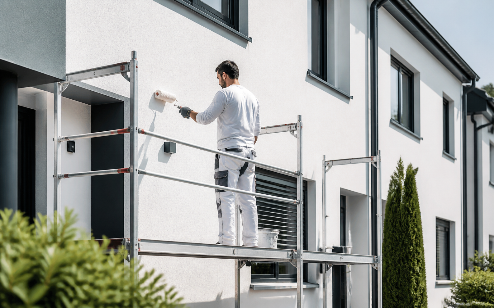
Außenanstrich, Fassadenüberarbeitung und Schutz vor Witterung, Algen und Alterung.
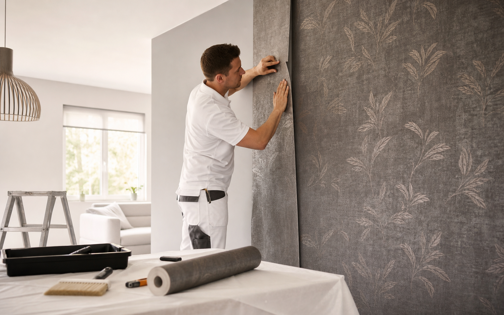
Exakte Vorbereitung, saubere Kanten und hochwertige Materialien für ein stimmiges Raumgefühl.
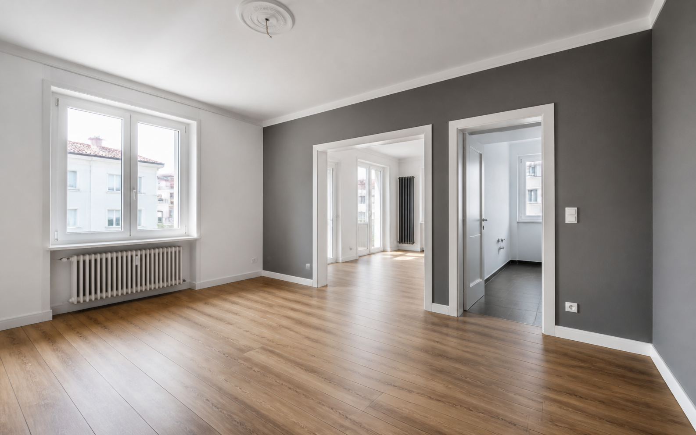
Wohnungen, Häuser und Gewerbeflächen werden strukturiert erneuert und terminsicher übergeben.
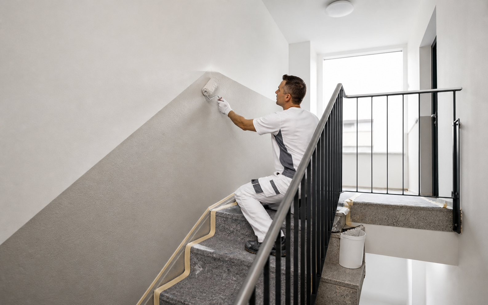
Robuste Beschichtungen, saubere Flächen und koordinierte Abläufe für Mehrfamilienhäuser.
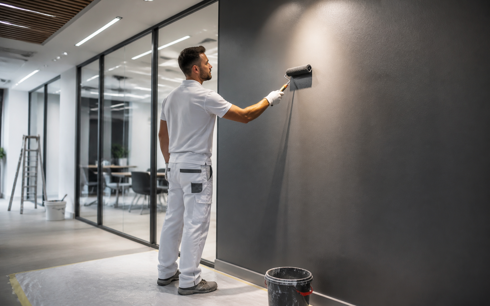
Planbare Malerarbeiten für Büros, Ladenflächen, Praxen und gewerbliche Immobilien.
Warum Kunden FIMAG wählen
Routiniertes Handwerk für Innenräume, Fassaden und Renovierungen.
Erprobte Abläufe für private, gewerbliche und verwaltete Immobilien.
Saubere Arbeit, transparente Abstimmung und ordentliche Übergabe.
Klare Kommunikation vom ersten Rückruf bis zur finalen Abnahme.
Vorher-Nachher
Beispielhafte Projektideen für Innenanstrich Karlsruhe, Fassadenarbeiten Karlsruhe und Renovierung Karlsruhe.
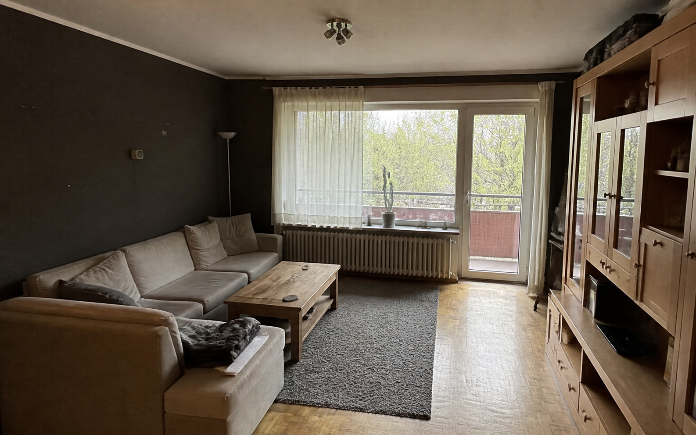
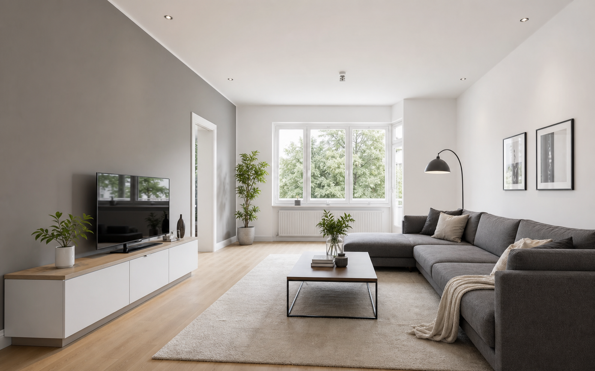
Vorher: Dunkle Wände und alte Oberflächen.
Nachher: Heller moderner Wohnraum mit hochwertigem Anstrich.
Ergebnis: Mehr Licht, klare Raumwirkung und ein gepflegter Gesamteindruck.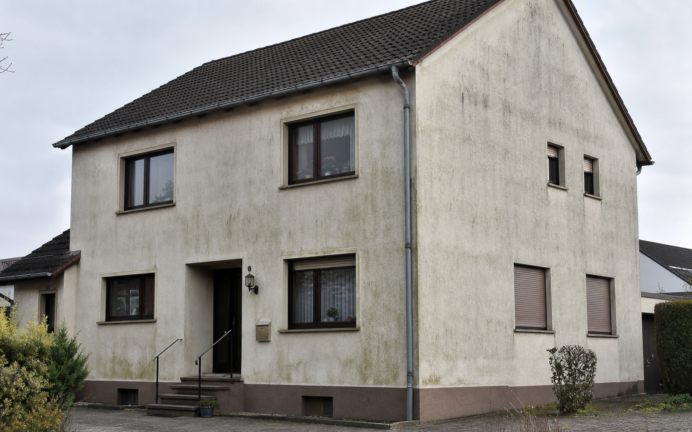
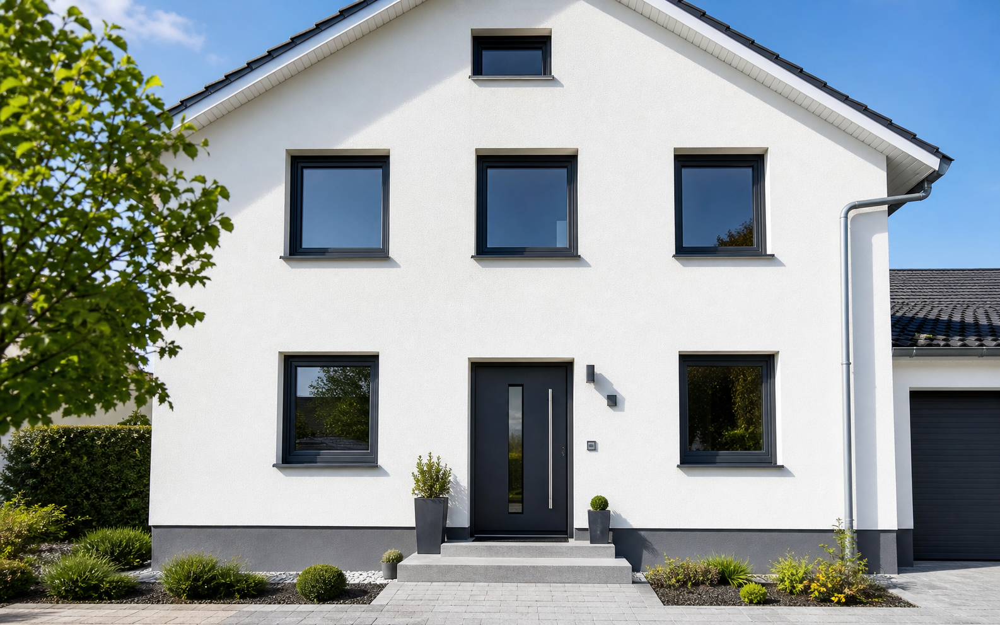
Vorher: Verwitterte Flächen und sichtbare Verschmutzung.
Nachher: Frischer Fassadenanstrich mit Schutz gegen Witterung.
Ergebnis: Gepflegte Optik und besserer Werterhalt der Immobilie.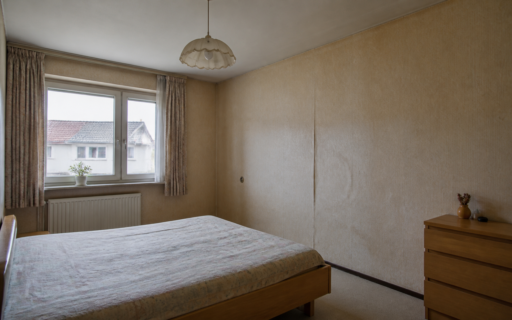
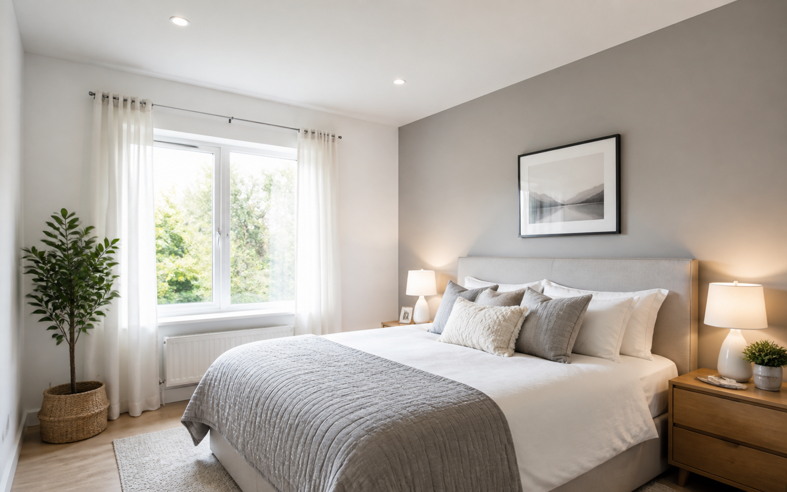
Vorher: Unebene Oberflächen und unruhige Wandgestaltung.
Nachher: Ruhige Farbwirkung und saubere Kanten.
Ergebnis: Angenehmer Raum mit hochwertigem Finish.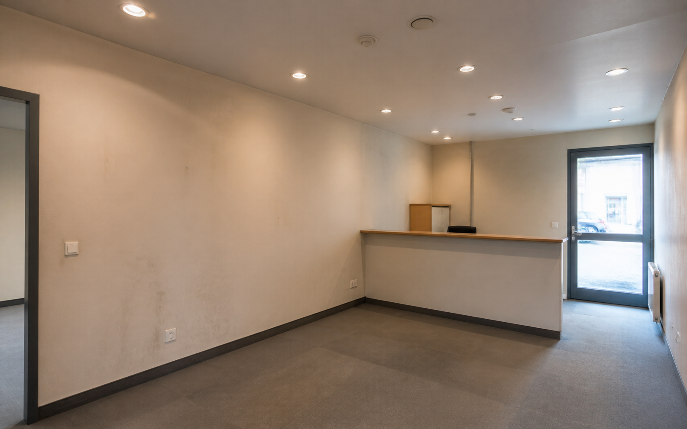
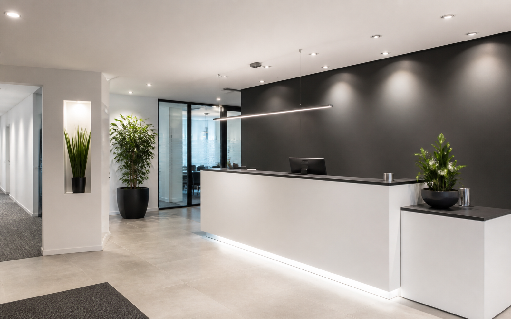
Vorher: Beanspruchte Wandflächen und wenig Präsenz.
Nachher: Saubere Oberflächen und professioneller Empfangsbereich.
Ergebnis: Besserer erster Eindruck für Kunden und Mitarbeitende.Kundenstimmen
Saubere Arbeit, faire Preise und pünktliche Fertigstellung.
Von der Beratung bis zur Ausführung absolut professionell.
Unsere Fassade sieht wieder aus wie neu.
Sehr sauber gearbeitet und die Wohnung ordentlich übergeben.
Klare Abstimmung, schnelle Rückmeldung und ein sehr gutes Ergebnis.
Die Arbeiten im Büro liefen termintreu und ohne Störungen.
Ablauf
Sie beschreiben kurz Ihr Objekt, den Ort und den gewünschten Leistungsumfang.
FIMAG klärt die wichtigsten Fragen persönlich und empfiehlt den passenden Ablauf.
Sie bekommen ein transparentes Angebot mit verständlicher Leistungsbeschreibung.
Die Arbeiten werden sauber vorbereitet, ausgeführt und ordentlich übergeben.
FAQ
Nach Ihrer Anfrage erfolgt zeitnah eine Rückmeldung. Je nach Projektumfang kann vor dem Angebot ein kurzer Vor-Ort-Termin sinnvoll sein.
Ja, FIMAG übernimmt Malerarbeiten für Privatkunden sowie gewerbliche Objekte, Büros, Praxen und Hausverwaltungen.
Für Innen- und Außenflächen werden hochwertige, passende Materialien eingesetzt. Auf der bestehenden Website wird Brillux als Partner-Lieferant genannt.
Das hängt von Fläche, Untergrund, Wetter und Leistungsumfang ab. Nach einer Einschätzung lässt sich ein realistischer Zeitplan festlegen.
Ja, Fassadenreinigung gehört zum Leistungsprofil und schafft eine tragfähige Basis für weitere Arbeitsschritte.
Ja, Vollwärmeschutz bzw. WDVS wird auf der bestehenden Leistungsseite als Bestandteil des Angebots genannt.
Kostenlose Erstberatung
Fordern Sie jetzt Ihre kostenlose Erstberatung an. Wir melden uns innerhalb von 24 Stunden.
Kontakt
Ob Innenanstrich, Fassadenarbeiten oder Renovierung in Karlsruhe: Senden Sie Ihre Anfrage oder rufen Sie direkt an.